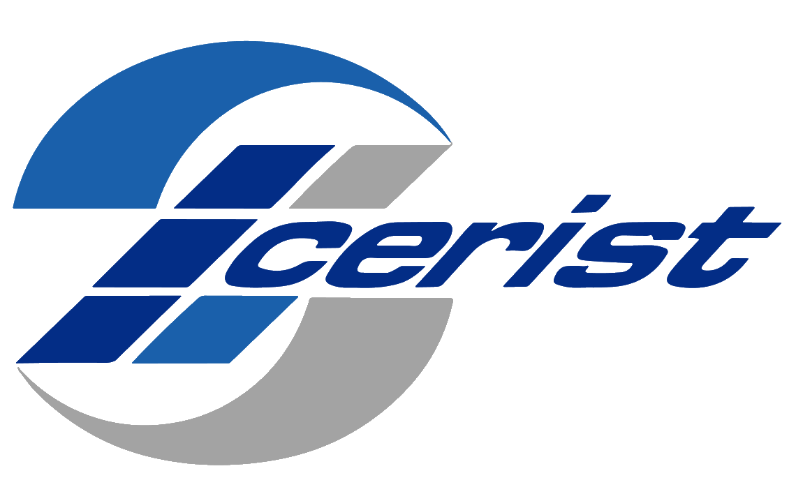

Développement d’une plateforme Streamlit pour automatiser les réponses aux appels d’offres via LLM.
Analyse technique des appels d’offres : extraction des flux PowerBI (Zoom Dataflow, Zoom modélisation tabulaire, Zoom Rapports Power BI) et extraction des flux d’intégration de données (zones Bronze, Silver et Gold).
Estimation des charges en JH et génération automatique de devis Excel via injection dans des templates personnalisables.
Système de recommandation de services Cloud

Projet de fin d’études Master — Fév 2024 – Juin 2024
Profilage des utilisateurs selon leur expertise et personnalisation des recommandations.
Création et entraînement d’un modèle de classification des avis via réseau neuronal convolutif (CNN) et filtrage collaboratif (classique et pondéré par expertise).
Implémentation d’algorithmes de recommandation : popularité globale, filtrage collaboratif, pondération des experts.
Tests et validation sur dataset réel pour évaluer et optimiser la pertinence des recommandations.
Système de reconnaissance faciale pour le pointage
Projet de fin d’étude Licence — Fév 2022 – Juin 2022
Détection et authentification faciale en temps réel (Haar, AdaBoost, LBPH).
Interface graphique et base de données pour la gestion des utilisateurs.